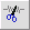
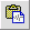
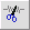
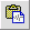

 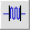
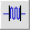
 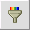
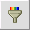


A picture of an ACORNS Sound Panel follows. Sound panels allow you to create, edit, and manipulate sound recordings.
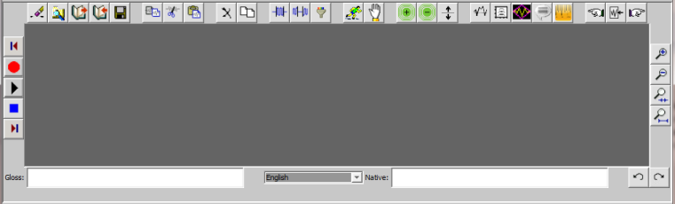
| Recording Buttons | |
| File Control Buttons |
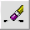
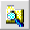
|
| Edit Buttons |
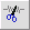
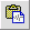
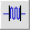
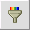
|
| Recording Speed and Volume Control Buttons | 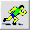 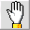 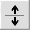 |
| Wave Display Buttons | 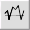 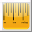 |
| Selection Control Buttons | 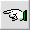 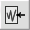 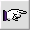 |
| Zoom Control Buttons |
|
| Redo and Undo Buttons |
|